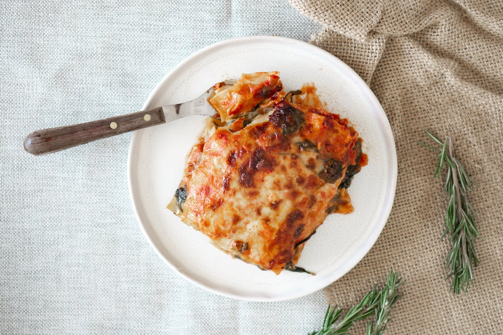

Home
Lasagna

Making perfect homemade lasagna doesn’t have to be tedious. This top-rated easy lasagna recipe
comes together quickly with a relatively short ingredient list.
Lasagna, also known by the plural form lasagne, is a type of pasta, possibly one of the oldest types, made in very wide,
flat sheets. In Italian cuisine it is made of stacked layers of pasta alternating with fillings such as ragù, béchamel sauce,
vegetables, cheeses, and seasonings and spices.
Ingredients
- 1 pound lean ground beef
- 1 (32 ounce) jar spaghetti sauce
- 32 ounces cottage cheese
- 3 cups shredded mozzarella cheese, divided
- 2 eggs
- ½ cup grated Parmesan cheese
- 2 teaspoons dried parsley
- salt to taste
- ground black pepper to taste
- 9 lasagna noodles
- ½ cup water